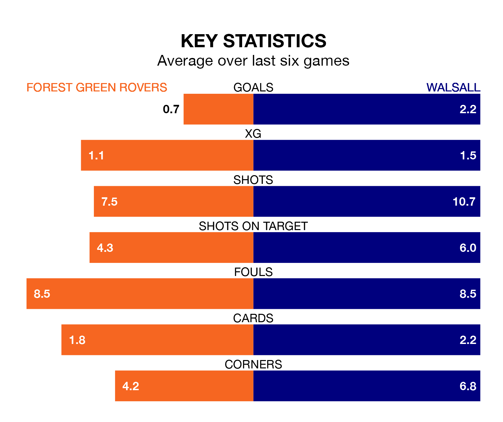

Walsall visit Forest Green Rovers at the Bolt New Lawn on Saturday on the back of five consecutive wins in EFL League Two.
Walsall have picked up 16 points from their last six games, and they face a Green side who lost their last match, and have collected seven points from the last possible 18.
Forest Green are 23rd in the table after 35 games, of which they have won six and drawn nine, earning 27 points.
Walsall are 16 places ahead of Rovers in seventh, with 15 wins and nine draws putting them on 54 points.
In the last 10 years, Forest Green and Walsall have played each other on 10 occasions. Forest Green won two of them, Walsall four, and they drew four times.
On average, the Green scored 1.0 goal and the Saddlers 1.5 in those matches.
Their last meeting was on November 25, when they played out a 0-0 draw.
With 34 goals in 35 games so far this season, the Green are the league's joint-second-lowest scorers with 1.0 goals per game. And they are conceding more than average, letting in 62 goals at a rate of 1.8 per game.
The Saddlers, meanwhile, are above average scorers, with 1.6 goals per game, compared to a league average of 1.5. They have conceded 1.4 goals per game.
Forest Green's last match was on March 2, a 1-0 loss against Grimsby Town.
Walsall beat Doncaster Rovers 3-1 last time out, also on March 2, with Jack Earing and Josh Gordon on the scoresheet.
Updated: 09:34 (UTC), 08/03/24